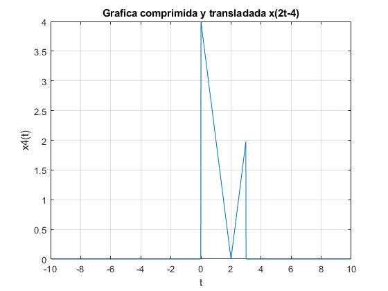

Práctica 3: Señales continuas
- Cruz Meneses Jorge Angel
- González Jiménez Daniel
- Lazcano Saavedra Miguel Salomón
- Rivera Ortiz Raúl Alejandro
Contents
Objetivos
- Manipulación básica de MATLAB®
- Gráficas de señales reales y complejas continuas
- Transformación de señales continuas (escalamientos y traslaciones)
- Cálculo de energía y potencia de señales continuas
Introducción
¿Que es MATLAB®?
Matlab es un "Software matemático con entorno de desarrollo integrado (IDE) que tiene un lenguaje de programación propio (Lenguaje M) y es multiplataforma (Unix, Windows y Apple Mac Os X)".
¿Para que sirve MATLAB®?
Millones de ingenieros y científicos de todo el mundo usan MATLAB® para analizar y diseñar los sistemas y productos que transforman nuestro mundo. MATLAB® está presente en sistemas de seguridad activa de automóviles, naves espaciales interplanetarias, dispositivos de monitorización de la salud, redes eléctricas inteligentes y redes móviles LTE. Se utiliza para aprendizaje automático, procesamiento de señales, procesamiento de imágenes, visión artificial, comunicaciones, finanzas computacionales, diseño de control, robótica y muchos otros campos.
¿Cuando comenzó MATLAB®?
MATLAB® fue originalmente escrito por Cleve Moler, fundador de MathWorks Inc., con el objetivo de proporcionar un acceso fácil al software matricial desarrollado en los proyectos de UNIX LINPACK y EISPACK. La primera versión de éste software comenzó a finales de los años 70 y se escribió en FORTRAN.
¿Hay algunas alternativas de MATLAB®?
Hoy en día tenemos algunas alternativas para el uso de éste software. Tenemos ,por ejemplo, a Octave, que es un sorftware muy parecido a MATLAB, sin embargo, éste es un software libre. Aunque es muy parecido, tiene unas cuantas diferencias en cuanto a sintaxis se refiere
Puede conocer un poco más en los siguientes enlaces
Desarrollo
A continuación, se presentan una serie de problemas de la Parte 1 del Curso de Señales y Sistemas, los cuales se les da resolución mediante código de MATLAB®.
Problema 1
- Crea una función que se llame fun1 y reciba dos parametros y la función debe regresar la evaluación , esta función debe trabajar con y . Debe mostrar su código en el reporte (sin ejecutar).
syms a w; fun1 = @(a,w)a./(a.^2+w.^2); %Declaracion de la funcion anonima fun1(1,0:1:10);
Problema 2
- Construya una función que grafique funciones de en el formato de su elección y pruebe su código mostrando la gráfica de vs en el intervalo para , no debe incluir el código, solo el uso de la función para mostrar la gráfica
a=1;
w=-2:0.01:2;
fun1 = @(a,w)a./(a.^2+w.^2);
FunPlot(w,fun1(a,w))
% La función se encuentra en el apendice
Problema 3
Fue informado por nuestro profesor que este ejercicio no se resuelve.
Problema 4
Realiza las mismas operaciones que Lathi en las secciones M1.1 a M1.4 que se encuentra al final del capítulo 1 y antes de la sección de problemas, cambie los inline por funciones anonimas
Seccion M1.1
Cambiamos la función inline por función anónima
f = @(t)exp(-t).*cos(2*pi*t); t=0; f(t) %%Observamos que es igual si evauluamos en w cuando es igual a 0 o en 0 directamente f(0) t=(-2:2); f(t) %%Podemos evaluar en un rango de números, en este caso (-2,-1,0,1,2) figure() plot(t,f(t)); %%Graficando la función evaluada en (-2:2) grid on; xlabel('t'); ylabel('f(t)'); title('Gráfica de f(t) = e^{-t}cos(2\pit) con t = (-2:2) ')
ans =
1
ans =
1
ans =
7.3891 2.7183 1.0000 0.3679 0.1353
t= (-2:0.01:2); %%Graficando la función evaluada en 100 diferentes puntos %para una mejor imagen de la gráfica plot (t,f(t)); grid on; xlabel('t'); ylabel('f(t)'); title('Gráfica de f(t) = e^{-t}cos(2\pit) con t = (-2:0.01:2). ')
Como se puede observar, añadiendo mas valores donde la gráfica puede ser evaluada, se obtiene la grafica real de la función.
% Seccion M.1.2 % % Cambiamos la función inline por función anónima u = @(t)t>=0; t = (-2:2); figure() plot (t,u(t)); grid on; xlabel('t'); ylabel('u(t)'); title('Grafica de u(t) con t = (-2:2)')

Como se observa en la gráfica, no se obtiene la gráfica real del escalón unitario dado que se ingresaron muy pocos valores al momento de evaluar la función
Sección M.1.3
Cambiamos la función inline por función anónima
t = (-2:0.01:2); plot (t,u(t)); axis ([-2 2 -0.1 1.1]); grid on; xlabel('t'); ylabel('u(t)'); title(' Gráfica de u(t) con t = (-2:0.01:2) ')
Una vez que se añaden los valores necesarios a evaluar, se obtiene la gráfica correcta del escalón unitario
Seccion M.1.4
Cambiamos la función inline por función anónima
p = @(t)(t>=0) & (t<1);0 t = (-1:0.01:2); plot(t,p(t)); axis ([-1 2 -.1 1.1]); grid on; xlabel('t'); ylabel('p(t) = u(t)-u(t-1)'); title('Grafica de p(t) = u(t)-u(t-1). ')
ans =
0
Asimismo, podemos obervar cual es la gráfica resultante de hacer la resta de un escalón unitario menos este mismo transladado a la derecha una unidad. p(t) = u(t)-u(t-1).
Problema 5
Resuelve el problema 1.2.2 usando las herramientas del paso anterior.
f = @(t) (-t).*((t>=-4)&(t<0))+ (t).*((t>=0)&(t<2)); t=(-10:.01:10); plot(t,f(t)) xlabel('t'); ylabel('x(t)'); title(' Grafica original x(t) '); grid on;
Inciso A.
a. x(t-4)
plot(t,f(t-4)) xlabel('t'); ylabel('x1(t)'); title(' Grafica Transladada x(t-4) '); grid on;
Se observa una nueva grafica transladada 4 unidades a la derecha de la original
Inciso B.
b. x(t/1.5)
plot(t,f(t/1.5)) xlabel('t'); ylabel('x2(t)'); title(' Grafica expandida x(t/1.5) '); grid on;
Se observa una nueva grafica que se expande horizontalmente 1.5 unidades de la original
Inciso C
c. x(-t)
plot(t,f(-t)) xlabel('t'); ylabel('x3(t)'); title(' Grafica invertida horizontalmente x(-t)) '); grid on;
Se observa una nueva grafica que fue invertida horizontalmente de la original
Inciso D
d. x(2t - 4)
plot(t,f(2*t-4)) xlabel('t'); ylabel('x4(t)'); title(' Grafica comprimida y transladada x(2t-4) '); grid on;
Se observa una nueva grafica que fue comprimida 2 unidades horizontalmente y transladada 4 unidades a la derecha
Inciso E
e. x(2 - t)
plot(t,f(2-t)) xlabel('t'); ylabel('x5(t)'); title(' Grafica Transladada x(t/1.5) '); grid on;
Se observa una nueva gráfica que fué invertida horizontamente y transladada 2 unidades a la izquierda
Problema 6
Escriba una función que se llame energia que reciba como argumento una función (anónima o simbólica) y que regrese el cálculo de la energía, para esto puede resultar útil investigar las instrucciones int , integral Se presupone utilizar el código solo con funciones de energia. Muestre el código sin ejecutar, y posteriormente resuelva el problema 1.1.3
La funcion que se realizó fué la siguiente:
function [Ener] = Energia (f,a,b) syms t sqr = @(x) x.^2; Ener = int(sqr(f),t,a,b); end
En donde se le pasan tres parametros, donde:
- f: Es la funcion a evaluar para obtener la energia
- a y b: Son los limites de la integral, lo que se hace es obtener un intervalo, en donde en ese intervalo lo que sucede es que se evalua la funcion, o en dado caso es de menos infinito a infinito.
Encuentre las energías del par de señales x(t) e y(t) representadas en las figuras P1.1-3a y P1.1-3b. Dibuje y encuentre las energías de las señales x(t)+y(t) y x(t)-y(t).
En el siguiente código procedemos a graficar las señales que a las cuales se nos solicita obtener su energía, asi como la obtencion de la energia. Ademas el código esta comentado en la obtencion de energias para saber cual es la energia para cada función, y de igual manera se comenta que gráficas son las que se estan graficando.
Ejercicio Fig P1.1-3a
syms t y1=@(x)1*((x>0)&(x<=2)); y2=@(x)(1.*((x>0)&(x<1))-1.*((x>1)&(x<=2))); x=-1:0.004:3; %Gráfica y1(x) figure; subplot(1,2,1); plot(x,y1(x),'-'); grid on; axis([-1, 3 -2 2]); title('y1(x)') %Energía y1(x) E1=Energia(1,0,2) %Gráfica y2(x) subplot(1,2,2); plot(x,y2(x),'-'); grid on; axis([-1, 3 -2 2]); title('y2(x)'); %Energia y2(x) E2=Energia(1,0,1)+Energia(-1,1,2) %Grafica y1(x)+y2(x) y=y1(x)+y2(x); figure; subplot(2,1,1); plot(x,y,'-'); grid on; axis([-1, 3 -1 3]); title('y=y1(x)+y2(x)'); %Energía y1(x)+y2(x) E3=Energia(2,0,1) %Gráfica y1(x)-y2(x) y=y1(x)-y2(x); subplot(2,1,2); plot(x,y,'-'); grid on; axis([-1, 3 -1 3]); title('y=y1(x)-y2(x)'); %Energia y1(x)-y2(x) E4=Energia(2,1,2)
E1 = 2 E2 = 2 E3 = 4 E4 = 4
Ejercicio Fig P1.1-3b
y1=@(x)sin(x).*((x>0)&(x<=2*pi)); y2=@(x)1*((x>0)&(x<=2*pi)); x=-1:0.004:3*pi; %Grafica y1(x) figure; subplot(1,2,1); plot(x,y1(x),'-'); grid on; axis([-1, 3*pi -2 2]); title('y1(x)') %Energia y1(x) E1=Energia(sin(t),0,2*pi) %Grafica y2(x) subplot(1,2,2); plot(x,y2(x),'-'); grid on; axis([-1, 3*pi -2 2]); title('y2(x)'); %Energia y2(x) E2=Energia(1,0,2*pi) %Grafica y1(x)+y2(x) y=y1(x)+y2(x); figure; subplot(2,1,1); plot(x,y,'-'); grid on; axis([-1, 3*pi -3 3]); title('y=y1(x)+y2(x)'); %Energia y1(x)+y2(x) E3=Energia(sin(t)+1,0,2*pi) %Grafica y1(x)-y2(x) y=y1(x)-y2(x); subplot(2,1,2); plot(x,y,'-'); grid on; axis([-1, 3*pi -3 3]); title('y=y1(x)-y2(x)'); %Energia y1(x)-y2(x) E4=Energia(sin(t)-1,0,2*pi)
E1 = pi E2 = 2*pi E3 = 3*pi E4 = 3*pi
Podemos observar que en las gráficas que estan compuestas por una suma de dos gráficas su energía es la suma de las energías de cada gráfica por separado, ahora vamos a probar si esto es valida para el tercer ejercicio.
Ejercicio Fig P1.1-3c
y1=@(x)sin(x).*((x>0)&(x<=pi)); y2=@(x)1*((x>0)&(x<=pi)); x=-1:0.004:3*pi; %Grafica y1(x) figure; subplot(1,2,1); plot(x,y1(x),'-'); grid on; axis([-1, 5 -2 2]); title('y1(x)') %Energia y1(x) E1=Energia(sin(t),0,pi) %Grafica y2(x) subplot(1,2,2); plot(x,y2(x),'-'); grid on; axis([-1, 5 -2 2]); title('y2(x)'); %Energia y2(x) E2=Energia(1,0,pi) %Grafica y1(x)+y2(x) y=y1(x)+y2(x); figure; subplot(2,1,1); plot(x,y,'-'); grid on; axis([-1, 5 -3 3]); title('y=y1(x)+y2(x)'); %Energia y1(x)+y2(x) E3=Energia(sin(t)+1,0,pi) %Grafica y1(x)-y2(x) y=y1(x)-y2(x); subplot(2,1,2); plot(x,y,'-'); grid on; axis([-1, 5 -3 3]); title('y=y1(x)-y2(x)'); %Energia y1(x)-y2(x) E4=Energia(sin(t)-1,0,pi)
E1 = pi/2 E2 = pi E3 = (3*pi)/2 + 4 E4 = (3*pi)/2 - 4
Ahora podemos notar que la observacion que notamos para los ejercicios anteriores no se cumplió como habíamos supuesto para los ejercicios anteriores.
Problema 7
- Escriba una función que se llame potencia que reciba como argumento una función (anonima o simbolica) y que regrese el calculo de la potencia para esto puede resultar útil investigar las instrucciones int , integral Se presupone utilizar el código solo con funciones de potencia. Muestre el código sin ejecutar, y posteriormente resuelva el problema 1.1.4
La función que se realizó fue la siguiente:
% Funcion con Periodo 4 syms t T c p1 = Potencia(t.^3,4) %Potencia de la señal original rms1 = p1.^(1/2) %Valor Rms de la señal original % Encuentre la Potencia de la señal periodica x(t) = t^{3} y de sus % transorfamaciones, así como su valor rms % Inciso A -x(t) p2 = Potencia((-1)*t.^3,4) %Potencia rms2 = p2.^(1/2) %Valor Rms % Inciso B 2x(t) p3 = Potencia((2)*t.^3,4) rms3 = p3.^(1/2) %Valor Rms % Inciso C cx(t) p4 = Potencia(c*t.^3,4) rms4 = p4.^(1/2) %Valor Rms % Definición de la Función del Cálculo de la Potencia
p1 = 64/7 rms1 = (8*7^(1/2))/7 p2 = 64/7 rms2 = (8*7^(1/2))/7 p3 = 256/7 rms3 = (16*7^(1/2))/7 p4 = (64*c^2)/7 rms4 = ((64*c^2)/7)^(1/2)
Apéndice
%Funcion Problema 2: function [] = FunPlot (w,funcion) plot(w,funcion) title('Gráfica de función f(w)'); grid on; end %Función de Energía Problema 6: function [Ener] = Energia (f,a,b) syms t sqr = @(x) x.^2; Ener = int(sqr(f),t,a,b); end %Función de Potencia Problema 7: function [Poten] = Potencia (f,T) syms t sqr = @(x) x.^2; Poten =(1/T)*int(sqr(f),t,-T/2,T/2); end
Referencias
- Ange Frado Garcia. (2016). Integracion numerica con Matlab. 23/09/2019, de EHU. Curso interactivo de física por internet Sitio web: http://www.sc.ehu.es/sbweb/fisica3/numerico/integral/integral_1.html
- Javier Vicente Saez. (2006). Matlab-Funcion a trozos . 23/09/2019, de La web del programador Sitio web: http://www.lawebdelprogramador.com/foros/Matlab/631528-funcion-a-trozos.html
- MATHWORKS. Funciones anonimas. 23/09/2019, de MATHWORKS Sitio web: http://la.mathworks.com/help/matlab/matlab_prog/anonymous-functions.html
- MATHWORKS. Integración numérica . 23/09/2019, de MATHWORKS Sitio web: http://la.mathworks.com/help/matlab/ref/integral.html
- MATHWORKS. Grafico de Lineas 2D. 23/09/2019, de MATHWORKS Sitio web: http://la.mathworks.com/help/matlab/ref/plot.html
- Rafael Martinez Martinez. P03SyS20201. 23/09/2019, de Github Sitio web http://rafneta.github.io/PracticasSyS/20201/P03SyS20201/P03SyS20201.html